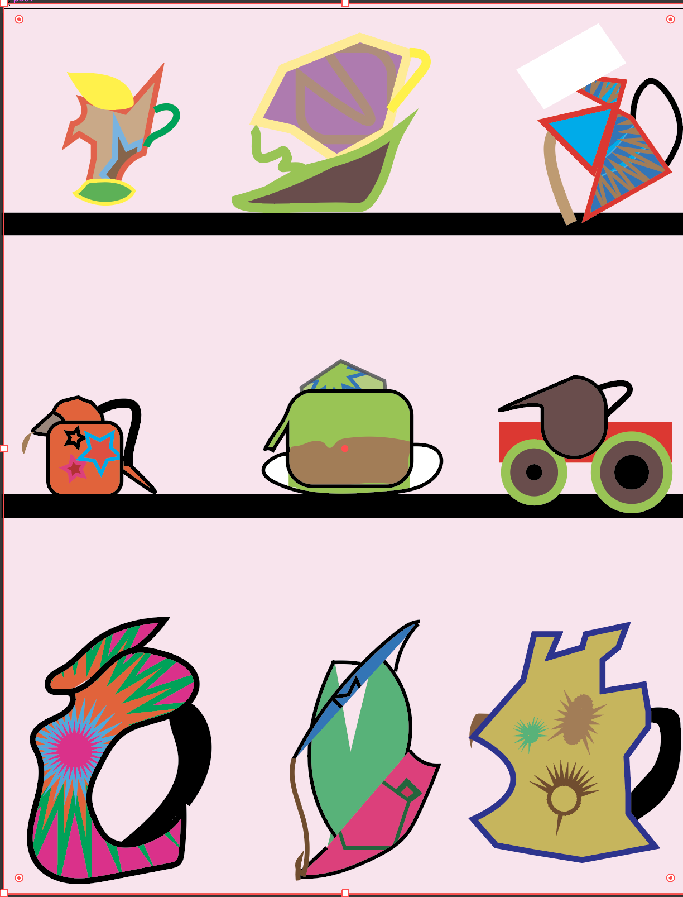
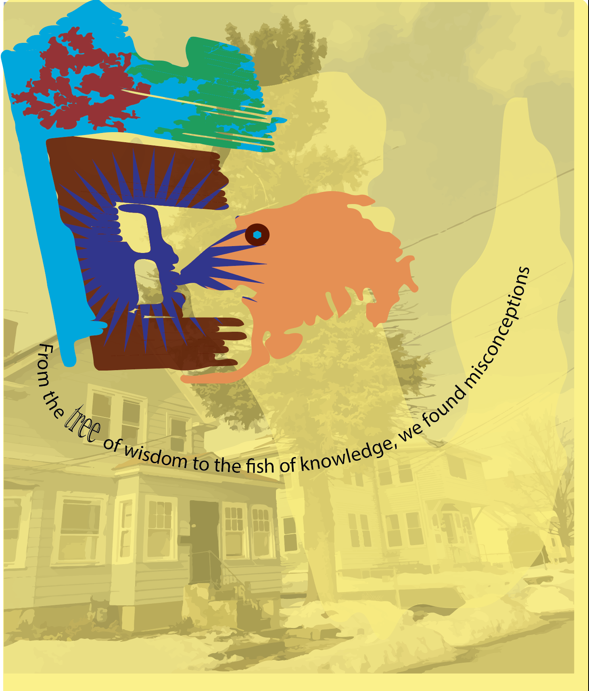
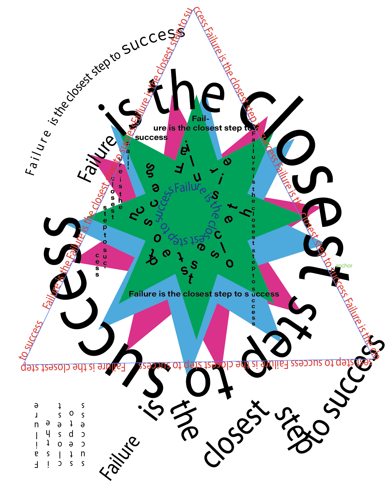
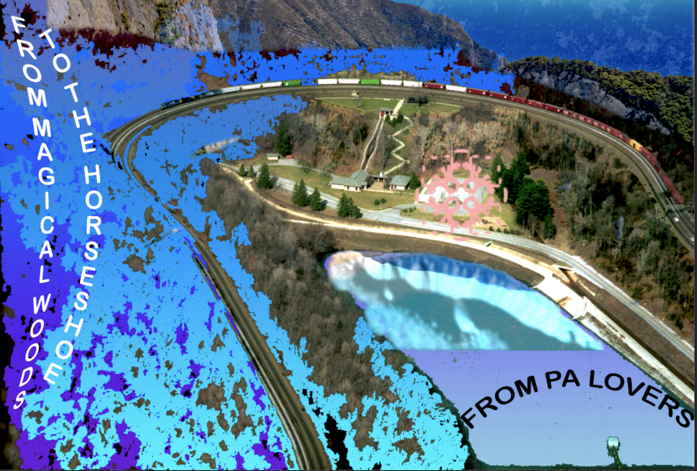

Tea-Wierd, this was my first real project for digital design think of something that can be a teapot or teacup. In this project we just tapped into our imagination to generate this teapots
Treesnowhouse, this magestic tree was in front of my house. I decided to use ilustrator to discover the shapes that it would create using the magicwand feature. From there it became such a piece.Imagination is amazing.
here you can see my motto,"failure is the closest step to success". There is no acomplishments without sacrifices. Sometimes we almost get to where we want but end up somewhere else.
this was my final project make a mygical postcard. I chose Pensilvania horseshoe and one of my country beaches as such magical place. You can see the combination of colors, land and sea
Anderson T, All Brands/Websites used in this document are not owned by the author, YOUTUBE is Trademark of GOOGLE LLC,Protonmail is Trademark of Proton AG, DISCORD is a trademark of DISCORD INC, Spotify is a trademark of Spotify AB and are use for edcational purpose only Copyright©2022